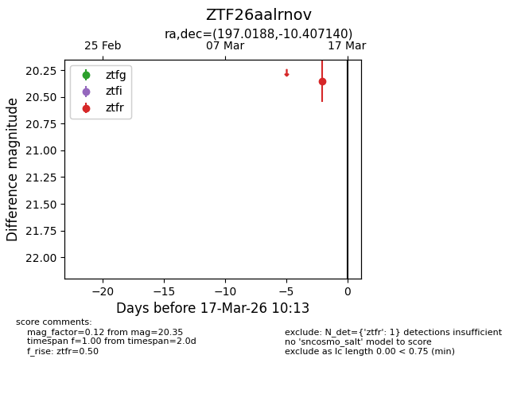
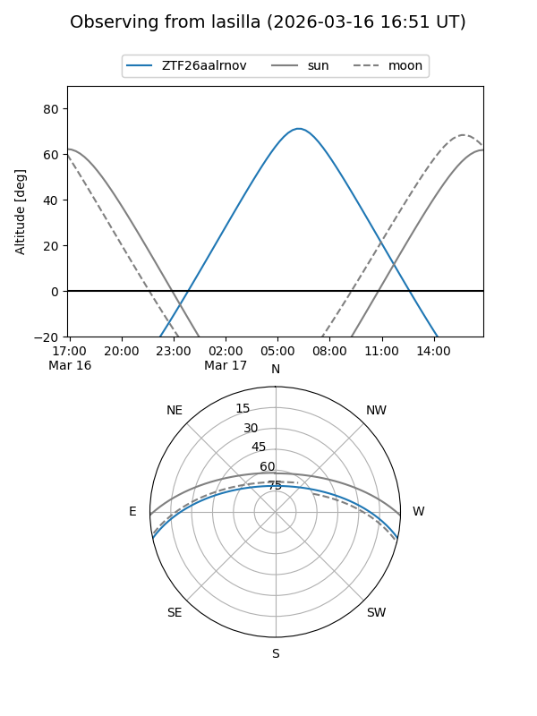
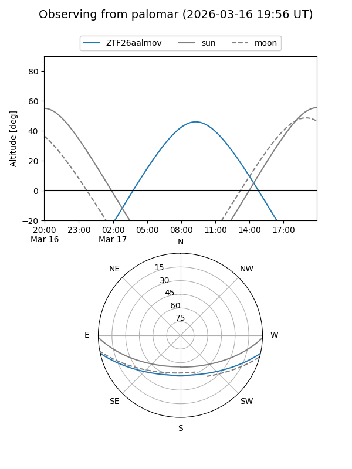

ZTF26aalrnov
Target ZTF26aalrnov at 2026-03-17 10:15
Aliases and brokers:
FINK: link
Lasair: link
ALeRCE: link
alt names
ZTF26aalrnov (ztf,fink_ztf)
Coordinates:
equatorial (ra, dec) = 197.0188,-10.40714
equatorial (HMS+DMS) = 13:08:04.52,-10:24:25.70
galactic (l, b) = (309.6232,+52.24832)
Flags:
Photometry:
last ztfr=20.35
1 ztfr detections
Lightcurve

Visibility


Additional plots